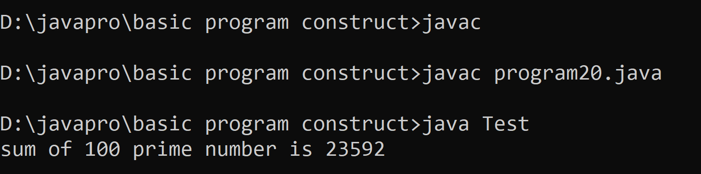

/*
- 20. Write a Java program to compute the sum of the first 100 prime numbers
*/
class Test
{
public static void main(String args[])
{
int num = 541; /* 100th prime number is 541 */
int sum = 0;
for (int n = 2; n < num; n++)
{
boolean isPrime = true;
for (int i = 2; i < n; i++) if (n%i == 0) isPrime = false;
if (isPrime) sum += n;
}
System.out.println("sum of 100 prime number is "+sum);
}
}
// the end
